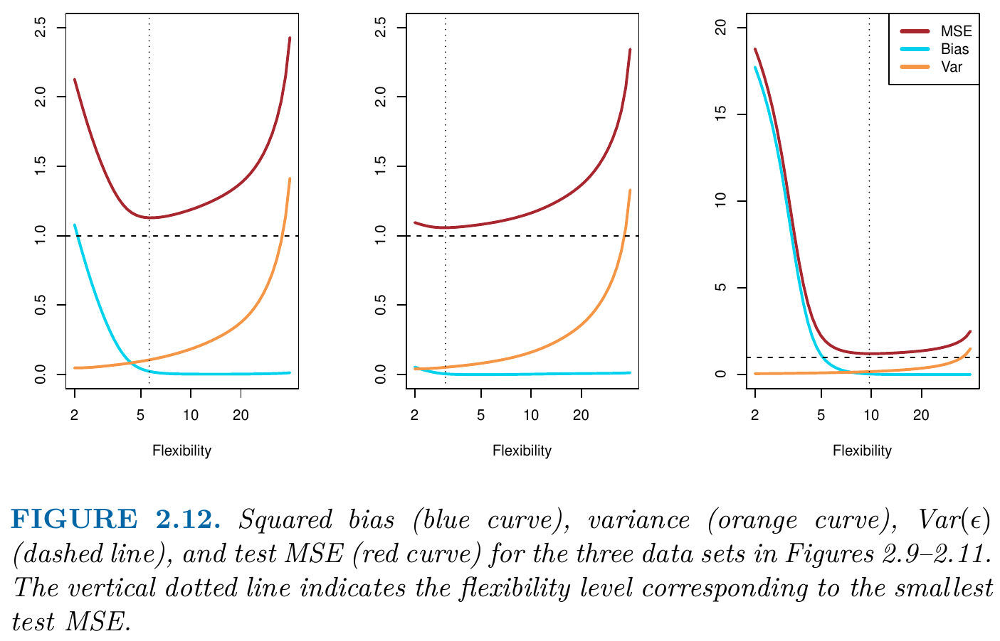
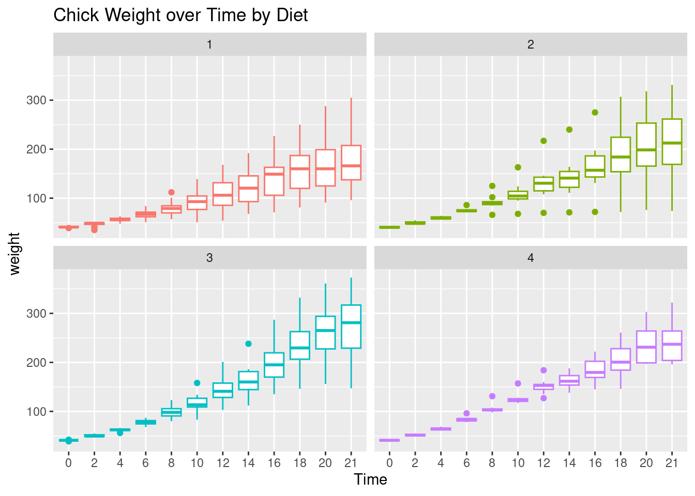

2+2 # and all the others: *,/,-,^2,^3,... [1] 4Reading: Chapter 2 of our course textbook An Introduction to Statistical Learning
Suppose that we observe a quantitative response \(Y\) and \(p\) different predictors, \(X_1, X_2, \dots, X_p.\)
We assume that there is some relationship between \(Y\) and \[ X = (X_1, X_2, \dots, X_p), \] which can be written in the very general form \[ Y = f(X) + \epsilon. \]
In this formulation, \(f\) represents the systematic information that \(X\) provides about \(Y.\)
In essence, statistical learning refers to a set of approaches for estimating \(f.\) In this chapter we outline some of the key theoretical concepts that arise in estimating \(f,\) as well as tools for evaluating the estimates obtained.
There are two main reasons that we may wish to estimate \(f\):
We discuss each in turn.
In many situations, a set of inputs \(X\) are readily available, but the output \(Y\) cannot be easily obtained. In this setting, since the error term averages to zero, we can predict \(Y\) using \[ \hat{Y} = \hat{f}(X), \]
In this setting, \(\hat{f}\) is often treated as a black box, in the sense that one is not typically concerned with the exact form of \(\hat{f},\) provided that it yields accurate predictions for \(Y.\)
Example: As an example, suppose that \((X_1, X_2, \dots, X_p)\) are characteristics of a patient’s blood sample that can be easily measured in a lab, and \(Y\) is a variable encoding the patient’s risk for a severe adverse reaction to a particular drug. It is natural to seek to predict \(Y\) using \(X,\) since we can then avoid giving the drug in question to patients who are at high risk of an adverse reaction–that is, patients for whom the estimate of \(Y\) is high.
The accuracy of \(\hat{Y}\) as a prediction for \(Y\) depends on two quantities: * the reducible error and * the irreducible error.
In general, \(\hat{f}\) will not be a perfect estimate for \(f,\) and this inaccuracy will introduce some error. This error is reducible, because we can potentially improve the accuracy of \(\hat{f}\) by using the most appropriate statistical learning technique to estimate \(f.\)
However, even if it were possible to form a perfect estimate for \(f,\) so that our estimated response took the form \[ \hat{Y} = f (X), \] our prediction would still have some error in it! This is because \(Y\) is also a function of \(\epsilon\) which, by definition, cannot be predicted using \(X.\) Therefore, variability associated with \(\epsilon\) also affects the accuracy of our predictions. This is known as the irreducible error, because no matter how well we estimate \(f,\) we cannot reduce the error introduced by \(\epsilon.\)
Consider a given estimate \(\hat{f}\) and a given set of predictors \(X,\) which yields the prediction \(\hat{Y} = \hat{f}(X).\) Assume for a moment that both \(\hat{f}\) and \(X\) are fixed, so that the only variability comes from \(\epsilon.\) Then, it is easy to show that \[\begin{align*} &E\left[(Y - \hat{Y})^2\right]\\ &=E\left[(f(X) + \epsilon - \hat{f}(X))^2\right] \\ &=E\left[\left(f(X) -\hat{f}(X)\right)^2 - \left(f(X) -\hat{f}(X)\right)\epsilon + \epsilon^2\right] \\ % &=E\left[\left(f(X) -\hat{f}(X)\right)^2\right] - E\left[\left(f(X) -\hat{f}(X)\right)\epsilon\right] + E\left[\epsilon^2\right] \\ &=\left(f(X) -\hat{f}(X)\right)^2 - \left(f(X) -\hat{f}(X)\right) E\left[\epsilon\right] + E\left[\epsilon^2\right] \\ &=\left(f(X) -\hat{f}(X)\right)^2 - \left(f(X) -\hat{f}(X)\right) \cdot 0 + Var\left(\epsilon\right) \\ &=\underbrace{\left(f(X) -\hat{f}(X)\right)^2}_{\text{reducable}} + \underbrace{Var\left(\epsilon\right)}_{\text{irreducable}}, \end{align*}\] where \(E\left[(Y - \hat{Y})^2\right]\) represents the expected value,of the squared difference between the predicted and actual value of \(Y,\) and where \(Var(\epsilon)\) represents the variance associated with the error term \(\epsilon.\)
The focus of this course is on techniques for estimating \(f\) with the aim of minimizing the reducible error.
It is important to keep in mind that the irreducible error will always provide an upper bound on the accuracy of our prediction for \(Y.\) This bound is almost always unknown in practice.
We are often interested in understanding the association between \(Y\) and \(X_1,\dots,X_p.\) In this situation we wish to estimate \(f,\) but our goal is not necessarily to make predictions for \(Y.\) Now \(\hat{f}\) cannot be treated as a black box, because we need to know its exact form. In this setting, one may be interested in answering the following questions:
In this course, we will see a number of examples that fall into the prediction setting, the inference setting, or a combination of the two.
We will always assume that we have observed a set of \(n\) different data points \[ \{(x_1,y_1),(x_2,y_2),\dots,(x_n,y_n)\}, \] where \[ x_i=(x_{i1},x_{i2},\dots,x_{ip})^T \] for all \(i=1,2,\dots,n.\)
These \(n\) observations are called training data because we will use these training observations to train, or teach, our method how to estimate \(f.\)
Our goal is to find a function \(hat{f}\) such that \[ Y \approx \hat{f}(X) \] for any observation \((X, Y)\).
Broadly speaking, most statistical learning methods for this task can be characterized as either parametric or non-parametric.
Parametric methods involve a two-step model-based approach.
First, we make an assumption about the functional form, or shape, of \(f.\) For example, a very simple, but often used assumption is that \(f\) is linear in \(X\): \[ f(X) = \beta_0 + \beta_1 X_1 + \beta_2 X_2 + \dots + \beta_p X_p \tag{1.1}\]
After a model has been selected, we need a procedure that uses the training data to fit or train the model. For example, in the case of the linear model Equation 1.1, we need to estimate the parameters \(\beta_0,\beta_1,\dots,\beta_p\) such that \[ Y \approx \beta_0 + \beta_1 X_1 + \beta_2 X_2 + \dots + \beta_p X_p \]
Most common estimation technique: (Ordinary) Least Squares
The parametric model-based approach reduces the problem of estimating \(f\) down to one of estimating a set of parameters.
We can try to address the problem of model misspecification by choosing flexible models that can fit many different possible functional forms for \(f.\)
But: Fitting a more flexible model requires estimating a greater number of parameters. These more complex models can lead to a phenomenon known as overfitting the data, which essentially means they follow the errors, or noise, too closely.
These issues are discussed through-out this course.
Non-parametric methods do not make explicit assumptions about the functional form of \(f.\) Instead, they make qualitative assumptions on \(f\) being a smooth function (i.e. continuously differentiable).
By avoiding the assumption of a particular, parametric functional form for \(f,\) non-parametric methods have the potential to accurately fit a wider range of possible shapes for \(f.\)
Major disadvantage: Non-parametric methods require a large number of observations to obtain an accurate estimate for \(f;\) far more than is typically needed for a parametric approach if the parametric model assumption is correct.
One might reasonably ask the following question:
Why would we ever choose to use a more restrictive method instead of a very flexible approach?
If we are mainly interested in inference, then restrictive models are much more interpretable. For instance, when inference is the goal, the linear model may be a good choice since it will be quite easy to understand the relationship between \(Y\) and \(X_1,\dots,X_p.\)
By contrast, very flexible approaches, such as purely non-parametric methods, can lead to such complicated estimates of \(f\) that it is difficult to understand how any individual predictor \(X_j\) is associated with the response \(Y.\)
In some settings, we are only interested in prediction, and the interpretability of the predictive model is simply not of interest. For instance, if we seek to develop an algorithm to predict the price of a stock, our sole requirement for the algorithm is that it predict accurately–interpretability is not a concern. In such settings, we might expect that it will be best to use the most flexible model available. Right?
Surprisingly, this is not always the case! We will often obtain more accurate predictions using a less flexible method. This phenomenon, which may seem counterintuitive at first glance, has to do with the potential for overfitting in highly flexible methods.
Most statistical learning problems fall into one of two categories:
In supervised learning problems, we observe for each predictor \(x_i,\) \(i=1,\dots,n,\) also a response \(y_i.\)
In unsupervised learning problems, we only the predictor \(x_i,\) \(i=1,\dots,n,\) but not the associated responses \(y_i.\)
Supervised learning methods:
Unsupervised learning methods:
Variables can be characterized as either quantitative or qualitative (also known as categorical).
Quantitative: Quantitative variables take on numerical values. Examples include a person’s age, height, or income, the value of a house, and categorical the price of a stock.
Qualitative/Categorial: Examples of qualitative variables include a person’s marital status (married or not), the brand of product purchased (brand A, B, or C), whether a person defaults on a debt (yes or no), or a cancer diagnosis (Acute Myelogenous Leukemia, Acute Lymphoblastic Leukemia, or No Leukemia).
We tend to refer to problems with a quantitative response as regression problems, while those involving a qualitative response are often referred to as classification problems.
However, the distinction (regression vs. classification) is not always that crisp. Least squares linear regression is used with a quantitative response, whereas logistic regression is typically used with a qualitative (two-class, or binary). Thus, despite its name, logistic regression is a classification method. But since it estimates class probabilities, it can be thought of as a regression method as well. Some statistical methods, such as K-nearest neighbors can be used in the case of either quantitative or qualitative responses.
There is no free lunch in statistics: no one method dominates all others over all possible data sets. On a particular data set, one specific method may work best, but some other method may work better on a similar but different data set.
Therefore, it is an important task to decide for any given set of data which method produces the best results. Selecting the best approach can be one of the most challenging parts of performing statistical learning in practice.
In the regression setting, the most commonly-used measure is the mean squared (prediction) error (MSE).
The global training (data) MSE is given by \[\begin{align*} \operatorname{MSE}_{\text{train}}=\frac{1}{n}\sum_{i=1}^n\left(y_i - \hat{f}(x_i)\right)^2, \end{align*}\] where
In general, however, we do not really care how well the method works on the training data. In fact, a very flexible (e.g. non-parametric) estimation method will tend to overfit the training data such that \(y_i\approx \hat{f}(x_i)\) for all \(i=1,\dots,n\) resulting in a training MSE that is close to zero since \(\hat{f}(x_i)\) fits also the errors \(\epsilon_i.\)
We are interested in the accuracy of the predictions that we obtain when we apply our method to previously unseen test data.
Example: Suppose that we are interested in developing an algorithm to predict a stock’s price based on previous stock returns. We can train the method using stock returns from the past 6 months. But we don’t really care how well our method predicts last week’s stock price. We instead care about how well it will predict tomorrow’s price or next month’s price.
Example: Suppose that we have clinical measurements (e.g. weight, blood pressure, height, age, family history of disease) for a number of patients, as well as information about whether each patient has diabetes. We can use these patients to train a statistical learning method to predict risk of diabetes based on clinical measurements. In practice, we want this method to accurately predict diabetes risk for future patients based on their clinical measurements.
Thus, we want to choose the method that gives the lowest test MSE, as opposed to the lowest training MSE.
Let \(\hat{f}\) be computed from the training data \(\{(x_1,y_1),\dots,(x_n,y_n)\}.\) And let \[ \{(x_{0},y_{01}),(x_{0},y_{02})\dots,(x_{0},y_{0m})\} \] denote the set of \(m\) test data points \(y_{01},\dots,y_{0m}\) for a given predictor value \(x_0\).
Then, the point-wise test MSE at \(x_0\) is given by, \[\begin{align*} \operatorname{MSE}_{\text{test}}(x_0)= \frac{1}{m}\sum_{i=1}^m\left(y_{0i} - \hat{f}(x_{0})\right)^2. \end{align*}\]
Typically, however, we want that a method has a globally low test MSE, i.e. for all predictor values in the range of \(X\), not only at a certain given value \(x_0\). Let \[ \{(x_{01},y_{01}),(x_{02},y_{02})\dots,(x_{0m},y_{0m})\} \] denote the set of \(m\) test data points with predictor values \(x_{01},\dots,x_{0m}\) in the range of \(X\). Then, the global test MSE is given by, \[\begin{align*} \operatorname{MSE}_{\text{test}}=\frac{1}{m}\sum_{i=1}^m\left(y_{0i} - \hat{f}(x_{0i})\right)^2. \end{align*}\]
Note that if \(\hat{f}\approx f,\) then \[ \operatorname{MSE}_{\text{test}}\approx \frac{1}{m}\sum_{i=1}^m\epsilon_i^2 \] estimates the variance of the error term \(Var(\epsilon)\), i.e., equals the irreducible error component of the mean squared (prediction) error.


Generate MSE-results similar to those shown in Figures 2.9, 2.10, and 2.11 of our textbook. Discuss your results.
In practice, one can usually compute the training MSE with relative ease, but estimating the test MSE is considerably more difficult because usually no test data are available.
As the three examples in Figures 2.9, 2.10, and 2.11 of our textbook illustrate, the flexibility level corresponding to the model with the minimal test MSE can vary considerably.
Throughout this book, we discuss a variety of approaches that can be used in practice to estimate the minimum point of the test MSE.
One important method is cross-validation, which is a method for estimating the test MSE using the training data.
The U-shape observed in the test MSE curves (Figures 2.9–2.11) turns out to be the result of two competing properties of statistical learning methods.
One can show that the expected test MSE can be decomposed as following: \[\begin{align*} E\left[\operatorname{MSE}_{test}(x_0)\right] & =E\left[\frac{1}{m}\sum_{i=1}^m\left(Y_{0i}- \hat{f}(x_0)\right)^2\right]\\[2ex] & =\frac{1}{m}\sum_{i=1}^mE\left[\left(Y_{0i}- \hat{f}(x_0)\right)^2\right]\\[2ex] & =\frac{1}{m}\,m\,E\left[\left(Y_{0}- \hat{f}(x_0)\right)^2\right]\quad(\text{since $Y_{0i}$ are iid})\\[2ex] & =E\left[\left(Y_0- \hat{f}(x_0)\right)^2\right]\\[2ex] %& =E\left[\left(Y_0- \hat{f}(x_0) \underbrace{+f(x_0)-f(x_0)}_{=0}\right)^2\right]\\[2ex] %& =E\left[\left(\left(f(x_0)-\hat{f}(x_0)\right)+\epsilon\right)^2\right]\\[2ex] %& =E\left[\left(f(x_0)-\hat{f}(x_0)\right)^2+2\left(f(x_0)-\hat{f}(x_0)\right)\epsilon+\epsilon^2\right]\\[2ex] %&\quad \text{Since $\epsilon$ (train) and $\hat{f}$ (test) are independent:}\\[2ex] %& =E\left[\left(f(x_0)-\hat{f}(x_0)\right)^2\right]+0+Var(\epsilon)\\[2ex] %& =E\left[\left(f(x_0)-\hat{f}(x_0)\underbrace{+E(\hat{f}(x_0))-E(\hat{f}(x_0))}_{=0}\right)^2\right]+Var(\epsilon)\\[2ex] %& =E\left[\left(-\left\{E(\hat{f}(x_0)) - f(x_0)\right\} - \left\{\hat{f}(x_0)-E(\hat{f}(x_0))\right\}\right)^2\right]+Var(\epsilon)\\[2ex] &\quad\text{(steps skipped since beyond scope)}\\[2ex] & = Var\left(\hat{f}(x_0)\right) + \left[\operatorname{Bias}\left(\hat{f}(x_0)\right)\right]^2 + Var\left(\epsilon\right) \end{align*}\]
The expected MSE at \(x_0,\) \(E\left[\operatorname{MSE}_{test}(x_0)\right],\) refers to the average test MSE that we would obtain if we repeatedly estimated \(f\) using training data set, and evaluated each at \(x_0.\)
A computed value of \(\operatorname{MSE}_{test}(x_0)\) is only one estimate of \(E\left[\operatorname{MSE}_{test}(x_0)\right].\)
To get information about Bias and Variance of a method, we need to approximate \(E\left[\operatorname{MSE}_{test}(x_0)\right];\) see Chapter 4.
To minimize the expected test MSE, we need to select a statistical learning method that simultaneously achieves low variance and low bias.
Note that \[ Var\left(\hat{f}(x_0)\right)\geq 0 \] and that \[ \left[\operatorname{Bias}\left(\hat{f}(x_0)\right)\right]^2\geq 0. \] Thus, the expected test MSE can never lie below of \(Var(\epsilon),\) i.e. \[ \begin{align*} E\left[\operatorname{MSE}_{test}(x_0)\right] & =E\left[\left(Y_0- \hat{f}(x_0)\right)^2\right] \geq Var\left(\epsilon\right). \end{align*} \]
The overall, i.e., global expected test MSE can be computed by averaging \(E[(Y_0- \hat{f}(x_0))^2]\) over all possible values of \(x_0\) in the test set.
\[ Var(\hat{f}(x_0))=E\left[\left(\hat{f}(x_0) - E\left[\hat{f}(x_0)\right]\right)^2\right] \] Variance refers to the amount by which \(\hat{f}\) would change if we estimated it using a different training data set. Since the training data are used to fit the statistical learning method, different training data sets will result in a different \(\hat{f}.\) But ideally the estimate for \(f\) should not vary too much between training sets. However, if a method has high variance then small changes in the training data can result in large changes in \(\hat{f}.\) In general, more flexible statistical methods have higher variance.
The overall, i.e., global variance can be computed by averaging \(Var(\hat{f}(x_0))\) over all possible values of \(x_0\) in the test set.
\[ \operatorname{Bias}(\hat{f}(x_0))=E\left[\hat{f}(x_0)\right] - f(x_0) \] Bias refers to the error that is introduced by approximating a real-life problem, which may be extremely complicated, by a much simpler model. Generally, more flexible methods result in less bias. As a general rule, as we use more flexible methods, the variance will increase and the bias will decrease—and vice versa.
The overall, i.e., global bias can be computed by averaging \(\operatorname{Bias}(\hat{f}(x_0))\) over all possible values of \(x_0\) in the test set.

Setup:
The alternative to the training MSE is here the training error rate \[ \frac{1}{n}\sum_{i=1}^nI(y_i\neq \hat{y}_i) \] which gives the relative frequency of false categorical predictions.
Here, \[ I(\cdot) \] is an indicator function with \(I(\text{true})=1\) and \(I(\text{false})=0.\)
Let \[ \{(y_{01},x_{01}), (y_{02},x_{02}),\dots, (y_{0m},x_{0m})\} \] denote \(m\) test data observations.
The alternative to the test MSE is here the test error rate \[ \frac{1}{m}\sum_{i=1}^mI(y_{0i}\neq \hat{y}_{0i}), \] where \(\hat{y}_{0i}\) is the predicted class label that results from applying the classifier \(\hat{f}\) (computed from the training data) to the test observation with predictor value \(x_{i0}.\)
A good classifier is one for which the test error rate is smallest.
It is possible to show (proof is outside of the scope of this course) that the test error rate is minimized, on average, by a very simple classifier that assigns each observation \(i\) to the most likely class, given its predictor values \(x_{0}\).
In other words, we should simply assign a test observation with predictor vector \(x_{0}\) to the class \(j\) for which \[ P(Y = j | X = x_{0}) \] is largest.
This very simple classifier is called the Bayes classifier.
In a two-class problem where there are only two possible response values, say class \(1\) or class \(2,\) the Bayes classifier corresponds to predicting class \(1\) if \[ P(Y = 1| X = x_0 ) > 0.5, \] and class two otherwise.
The Bayes classifier produces the lowest possible test error rate, called the Bayes error rate. The point-wise Bayes error rate at \(x_0\) is given by \[ 1 - \max_{j}P(Y = 1| X = x_0 ), \] where the maximization is over all class labels \(j\) (e.g. \(j\in\{1,2\}\))
The global overall Bayes error rate is given by \[ 1 - E\left(\max_{j}P(Y = 1| X )\right), \] where the expectation averages the probability over all possible values of \(X.\)
In theory we would always like to predict qualitative responses using the Bayes classifier. But for real data, we do not know the conditional distribution of \(Y\) given \(X,\) and so computing the Bayes classifier is impossible.
Many approaches attempt to estimate the conditional distribution of \(Y\) given \(X,\) and then classify a given observation to the class with highest estimated probability. One such method is the \(K\)-nearest neighbors (KNN) classifier.
Given a positive integer \(K\) and a test observation \(x_0,\) the KNN classifier first identifies the \(K\) points in the training data \[ \{(x_1,y_1),(x_2,y_2),\dots,(x_n,y_n)\}, \] that are closest to \(x_0,\) represented by \[ \mathcal{N}_0=\{i=1,\dots,n \;|\; x_i \text{ is the $K$th closest point to }x_0 \text{ or closter}\}. \] I.e. \(\mathcal{N}_0\) is an index set that allows to select the \(K\) nearest neighbors in the training data.
KNN estimates the conditional probability for class \(j\) as the fraction of points in \(\mathcal{N}_0\) whose response value \(y_i\) equals \(j:\) \[ \begin{align} P(Y = j | X = x_{0}) &\approx \hat{P}(Y = j | X = x_{0})\\[2ex] &= \frac{1}{K}\sum_{i\in\mathcal{N}_0}I(y_i = j) \end{align} \tag{1.2}\] Finally, KNN classifies the test observation \(x_0\) to the class \(j\) with the largest probability from Equation 1.2.
Figure 2.14 provides an illustrative example of the KNN approach. In the left-hand panel, a small training data set is shown consisting of six blue and six orange observations. Our goal is to make a prediction for the point labeled by the black cross. In the right-hand panel of Figure 2.14 we have applied the KNN approach with \(K = 3\) at all of the possible values for \(X_1\) and \(X_2,\) and have drawn in the corresponding KNN decision boundary.


Generate classification results similar to those shown in Figures 2.15 and 2.16 of our textbook. Discuss your results.
R-Lab: Introduction to RThis tutorial aims to serve as an introduction to the software package R. Other very good and much more exhaustive tutorials and useful reference-cards can be found at the following links:
Some other tutorials:
Why R?
R is free of charge from: www.r-project.orgLets start the tutorial with a (very) short glossary:
> sign at the beginning..R. For instance, yourFavoritFileName.R.getwd() you get the location of your current working directory and setwd() allows you to set a new location for it.ls() shows all elements in our current workspace and rm(list=ls()) deletes all elements in our current workspace.A good idea is to use a script file such as yourFavoritFileName.R in order to store your R commands. You can send single lines or marked regions of your R-code to the console by pressing the keys STRG+ENTER.
To begin with baby steps, do some simple computations:
2+2 # and all the others: *,/,-,^2,^3,... [1] 4Note: Everything that is written after the #-sign is ignored by R, which is very useful to comment your code.
The assignment operator <- or = will be your most often used tool. Here an example to create a scalar variable:
x <- 4
x[1] 44 -> x # possible but unusual
x[1] 4Note: The R community loves the <- assignment operator, which is a very unusual syntax. Alternatively, you can use the more common = operator which is also used in languages like python or matlab.
And now a more interesting object - a vector:
y <- c(2,7,4,1)
y[1] 2 7 4 1The command ls() shows the total content of your current workspace, and the command rm(list=ls()) deletes all elements of your current workspace:
ls()[1] "x" "y"rm(list=ls())
ls()character(0)Note: RStudio’s Environment pane also lists all the elements in your current workspace. That is, the command ls() becomes a bit obsolete when working with RStudio.
Let’s try how we can compute with vectors and scalars in R.
x <- 4
y <- c(2,7,4,1)
x*y # each element in the vector, y, is multiplied by the scalar, x.[1] 8 28 16 4y*y # this is a term by term product of the elements in y[1] 4 49 16 1Performing vector multiplications as you might expect from your last math-course, e.g., an outer product: \(y\,y^\top\):
y %*% t(y) [,1] [,2] [,3] [,4]
[1,] 4 14 8 2
[2,] 14 49 28 7
[3,] 8 28 16 4
[4,] 2 7 4 1Or an inner product \(y^\top y\):
t(y) %*% y [,1]
[1,] 70Note: Sometimes, R’s treatment of vectors can be annoying. The product y %*% y is treated as the product t(y) %*% y.
The term-by-term execution as in the above example, y*y, is actually a central strength of R. We can conduct many operations vector-wisely:
y^2[1] 4 49 16 1log(y)[1] 0.6931472 1.9459101 1.3862944 0.0000000exp(y)[1] 7.389056 1096.633158 54.598150 2.718282y-mean(y)[1] -1.5 3.5 0.5 -2.5(y-mean(y))/sd(y) # standardization [1] -0.5669467 1.3228757 0.1889822 -0.9449112This is a central characteristic of so called matrix based languages like R (or Matlab). Other programming languages often have to use loops instead:
N <- length(y)
1:N
y.sq <- numeric(N)
y.sq
for(i in 1:N){
y.sq[i] <- y[i]^2
if(i == N){
print(y.sq)
}
}The for()-loop is the most common loop. But there is also a while()-loop and a repeat()-loop. However, loops in R can be rather slow, therefore, try to avoid them!
Useful commands to produce sequences of numbers:
1:10
-10:10
?seq # Help for the seq()-function
seq(from=1, to=100, by=7)Using the sequence command 1:16, we can go for our first matrix:
?matrix
A <- matrix(data=1:16, nrow=4, ncol=4)
A [,1] [,2] [,3] [,4]
[1,] 1 5 9 13
[2,] 2 6 10 14
[3,] 3 7 11 15
[4,] 4 8 12 16A <- matrix(1:16, 4, 4)Note that a matrix has always two dimensions, but a vector has only one dimension:
dim(A) # Dimension of matrix A?[1] 4 4dim(y) # dim() does not operate on vectors.NULLlength(y) # Length of vector y?[1] 4Lets play a bit with the matrix A and the vector y. As we have seen in the loop above, the []-operator selects elements of vectors and matrices:
A[,1]
A[4,4]
y[c(1,4)]This can be done on a more logical basis, too. For example, if you want to know which elements in the first column of matrix A are strictly greater than 2:
A[,1][A[,1]>2][1] 3 4# Note that this give you a boolean vector:
A[,1]>2[1] FALSE FALSE TRUE TRUE# And you can use it in a non-sense relation, too:
y[A[,1]>2][1] 4 1Note: Logical operations return so-called boolean objects, i.e., either a TRUE or a FALSE. For instance, if we ask R whether 1>2 we get the answer FALSE.
Besides classical data objects such as scalars, vectors, and matrices there are three further data objects in R:
array:myFirst.Array <- array(c(1:8), dim=c(2,2,2)) # Take a look at it!lists you can organize different kinds of data. E.g., consider the following example:myFirst.List <- list("Some_Numbers" = c(66, 76, 55, 12, 4, 66, 8, 99),
"Animals" = c("Rabbit", "Cat", "Elefant"),
"My_Series" = c(30:1)) A very useful function to find specific values and entries within lists is the str()-function:
str(myFirst.List)List of 3
$ Some_Numbers: num [1:8] 66 76 55 12 4 66 8 99
$ Animals : chr [1:3] "Rabbit" "Cat" "Elefant"
$ My_Series : int [1:30] 30 29 28 27 26 25 24 23 22 21 ...data.frame is a list-object but with some more formal restrictions (e.g., equal number of rows for all columns). As indicated by its name, a data.frame-object is designed to store data:myFirst.Dataframe <- data.frame("Credit_Default" = c( 0, 0, 1, 0, 1, 1),
"Age" = c(35,41,55,36,44,26),
"Loan_in_1000_EUR" = c(55,65,23,12,98,76))
# Take a look at it!Alright, let’s do some statistics with real data. You can download the data HERE. Save it on your computer, at a place where you can find it, and give the path (e.g. "C:\textbackslash path\textbackslash auto.data.csv", which references to the data, to the file-argument of the function read.csv():
# ATTENTION! YOU HAVE TO CHANGE "\" TO "/":
auto.data <- read.csv(file="C:/your_path/autodata.txt", header=TRUE)
head(auto.data)If you have problems to read the data into R, go on with these commands. (For this you need a working internet connection!):
# install.packages("readr")
library("readr")
auto.data <- suppressMessages(read_csv(file = "https://cdn.rawgit.com/lidom/Teaching_Repo/bc692b56/autodata.csv",col_names = TRUE))
# head(auto.data)You can select specific variables of the auto.data using the $-operator:
gasolin.consumption <- auto.data$MPG.city
car.weight <- auto.data$Weight
## Take a look at the first elements of these vectors:
head(cbind(gasolin.consumption,car.weight)) gasolin.consumption car.weight
[1,] 25 2705
[2,] 18 3560
[3,] 20 3375
[4,] 19 3405
[5,] 22 3640
[6,] 22 2880This is how you can produce your first plot:
## Plot the data:
plot(y=gasolin.consumption, x=car.weight,
xlab="Car-Weight (US-Pounds)",
ylab="Consumption (Miles/Gallon)",
main="Buy Light-Weight Cars!")
As a first step, we might assume a simple kind of linear relationship between the variables gasolin.consumption and car.weight. Let us assume that the data was generated by the following simple regression model: \[
y_i=\alpha+\beta_1 x_i+\varepsilon_i,\quad i=1,\dots,n
\] where \(y_i\) denotes the gasoline-consumption, \(x_i\) the weight of car \(i\), and \(\varepsilon_i\) is a mean zero constant variance noise term. (This is clearly a non-sense model!)
The command lm() computes the estimates of this linear regression model. The command (in fact it’s a method) summary() computes further quantities of general interest from the object that was returned from the lm() function.
lm.result <- lm(gasolin.consumption~car.weight)
lm.summary <- summary(lm.result)
lm.summary
Call:
lm(formula = gasolin.consumption ~ car.weight)
Residuals:
Min 1Q Median 3Q Max
-6.7946 -1.9711 0.0249 1.1855 13.8278
Coefficients:
Estimate Std. Error t value Pr(>|t|)
(Intercept) 47.048353 1.679912 28.01 <2e-16 ***
car.weight -0.008032 0.000537 -14.96 <2e-16 ***
---
Signif. codes: 0 '***' 0.001 '**' 0.01 '*' 0.05 '.' 0.1 ' ' 1
Residual standard error: 3.038 on 91 degrees of freedom
Multiple R-squared: 0.7109, Adjusted R-squared: 0.7077
F-statistic: 223.8 on 1 and 91 DF, p-value: < 2.2e-16Of course, we want to have a possibility to access all the quantities computed so far, e.g., in order to plot the results. This can be done as following:
## Accessing the computed quantities
names(lm.summary) ## Alternatively: str(lm.summary) [1] "call" "terms" "residuals" "coefficients"
[5] "aliased" "sigma" "df" "r.squared"
[9] "adj.r.squared" "fstatistic" "cov.unscaled" alpha <- lm.summary$coefficients[1]
beta <- lm.summary$coefficients[2]
## Plot all:
plot(y=gasolin.consumption, x=car.weight,
xlab="Car-Weight (US-Pounds)",
ylab="Consumption (Miles/Gallon)",
main="Buy light-weight Cars!")
abline(a=alpha,
b=beta, col="red")
RLet’s write, i.e., program our own R-function for estimating linear regression models. In order to be able to validate our function, we start with simulating data for which we then know all true parameters.
Simulating data is like being the “Data-God”: For instance, we generate realizations of the error term \(\varepsilon_i\), i.e., something which we never observe in real data.
Let us consider the following multiple regression model:
\[y_i=\beta_1 +\beta_2 x_{2i}+\beta_3 x_{3i}+\varepsilon_{i},\quad i=1,\dots,n,\] where \(\varepsilon_{i}\) is a heteroscedastic error term \[\varepsilon_{i}\sim N(0,\sigma_i^2),\quad \sigma_i=|x_{3i}|,\]
and where for all \(i=1,\dots,n=50\):
set.seed(109) # Sets the "seed" of the random number generators:
n <- 50 # Number of observations
## Generate two explanatory variables plus an intercept-variable:
X.1 <- rep(1, n) # Intercept
X.2 <- rnorm(n, mean=10, sd=1.5) # Draw realizations form a normal distr.
X.3 <- rt(n, df=5, ncp=2) # Draw realizations form a t-distr.
X <- cbind(X.1, X.2, X.3) # Save as a Nx3-dimensional data matrix.OK, we have regressors, i.e., data that we also have in real data sets.
Now we define the elements of the \(\beta\)-vector. Be aware of the difference: In real data sets we do not know the true \(\beta\)-vector, but try to estimate it. However, when simulating data, we determine (as “Data-Gods”) the true \(\beta\)-vector and can compare our estimate \(\hat{\beta}\) with the true \(\beta\):
## Define the slope-coefficients
beta.vec <- c(1,-5,5)We still need to simulate realizations of the dependent variable \(y_i\). Remember that \(y_i=\beta_1 x_{1i}+\beta_1 x_{2i}+\beta_3 x_{3i}+\varepsilon_{i}\). That is, we only need realizations from the error terms \(\varepsilon_i\) in order to compute the realizations from \(y_i\). This is how you can simulate realizations from the heteroscedastic error terms \(\varepsilon_i\):
## Generate realizations from the heteroscadastic error term
eps <- rnorm(n, mean=0, sd=abs(X.3))Take a look at the heteroscedasticity in the error term:
plot(y=eps, x=X.3,
main="Realizations of the \nHeteroscedastic Error Term")
With the (pseudo-random) realizations from \(\varepsilon_i\), we can finally generate realizations from the dependent variable \(y_i\):
## Dependent variable:
y <- X %*% beta.vec + epsLet’s take a look at the data:
mydata <- data.frame("Y"=y, "X.1"=X.1, "X.2"=X.2, "X.3"=X.3)
pairs(mydata[,-2]) # The '-2' removes the intercept variable "X.1"
Once we have data, we can compute the OLS estimate of the true \(\beta\) vector. Remember the formula: \[\hat{\beta}=(X^\top X)^{-1}X^\top y\] In R-Code this is: \((X^\top X)^{-1}=\)solve(t(X) %*% X), i.e.:
## Computation of the beta-Vector:
beta.hat <- solve(t(X) %*% X) %*% t(X) %*% y
beta.hat [,1]
X.1 -2.609634
X.2 -4.692735
X.3 5.078342Well done. Using the above lines of code we can easily program our own myOLSFun() function!
myOLSFun <- function(y, x, add.intercept=FALSE){
## Number of Observations:
n <- length(y)
## Add an intercept to x:
if(add.intercept){
Intercept <- rep(1, n)
x <- cbind(Intercept, x)
}
## Estimation of the slope-parameters:
beta.hat.vec <- solve(t(x) %*% x) %*% t(x) %*% y
## Return the result:
return(beta.hat.vec)
}
## Run the function:
myOLSFun(y=y, x=X) [,1]
X.1 -2.609634
X.2 -4.692735
X.3 5.078342Can you extend the function for the computation of the covariance matrix of the slope-estimates, several measures of fits (R\(^2\), adj.-R\(^2\), etc.), t-tests, …?
One of the best features in R are its contributed packages. The list of all packages on CRAN is impressive! Take a look at it HERE
For instance, nice plots can be produced using the R-package is ggplot2. You can find an intro do this package HERE.
# install.packages("ggplot2")
library("ggplot2")
qplot(Sepal.Length, Petal.Length, data = iris, color = Species)Warning: `qplot()` was deprecated in ggplot2 3.4.0.
Of course, ggplot2 concerns “only” plotting, but you’ll find R-packages for almost any statistical method out there.
The tidyverse package is a collection of packages that lets you import, manipulate, explore, visualize and model data in a harmonized and consistent way which helps you to be more productive.
Installing the tidyverse package:
install.packages("tidyverse")To use the tidyverse package load it using the library() function:
library(tidyverse)── Attaching core tidyverse packages ──────────────────────── tidyverse 2.0.0 ──
✔ dplyr 1.1.0 ✔ stringr 1.5.0
✔ forcats 1.0.0 ✔ tibble 3.1.8
✔ lubridate 1.9.2 ✔ tidyr 1.3.0
✔ purrr 1.0.1
── Conflicts ────────────────────────────────────────── tidyverse_conflicts() ──
✖ dplyr::filter() masks stats::filter()
✖ dplyr::lag() masks stats::lag()
ℹ Use the conflicted package (<http://conflicted.r-lib.org/>) to force all conflicts to become errorsChick Weight Data
R comes with many datasets installed. We will use the ChickWeight dataset to learn (a little) about the tidyverse. The help system gives a basic summary of the experiment from which the data was collect:
“The body weights of the chicks were measured at birth and every second day thereafter until day 20. They were also measured on day 21. There were four groups of chicks on different protein diets.”
You can get more information, including references by typing:
help("ChickWeight")The Data: There are 578 observations (rows) and 4 variables:
Chick – unique ID for each chick.Diet – one of four protein diets.Time – number of days since birth.weight – body weight of chick in grams.Note: weight has a lower case w (recall R is case sensitive).
Store the data locally:
ChickWeight %>%
dplyr::select(Chick, Diet, Time, weight) %>%
dplyr::arrange(Chick, Diet, Time) %>%
write_csv("DATA/ChickWeight.csv")First we will import the data from a file called ChickWeight.csv using the read_csv() function from the readr package (part of the tidyverse). The first thing to do, outside of R, is to open the file ChickWeight.csv to check what it contains and that it makes sense. Now we can import the data as follows:
CW <- readr::read_csv("DATA/ChickWeight.csv")Rows: 578 Columns: 4
── Column specification ────────────────────────────────────────────────────────
Delimiter: ","
dbl (4): Chick, Diet, Time, weight
ℹ Use `spec()` to retrieve the full column specification for this data.
ℹ Specify the column types or set `show_col_types = FALSE` to quiet this message.If all goes well then the data is now stored in an R object called CW. If you get the following error message then you need to change the working directory to where the data is stored:
Error: ‘ChickWeight.csv’ does not exist in current working directory …
Changing the working directory: In RStudio you can use the menu bar (“Session - Set Working Directory - Choose Directory…”). Alternatively, you can use the function setwd(). Last but not least, to avoid issues with brocken paths to files and data sets, use RStudios’ “Project” tools.
Looking at the Dataset: To look at the data type just type the object (dataset) name:
CW# A tibble: 578 × 4
Chick Diet Time weight
<dbl> <dbl> <dbl> <dbl>
1 18 1 0 39
2 18 1 2 35
3 16 1 0 41
4 16 1 2 45
5 16 1 4 49
6 16 1 6 51
7 16 1 8 57
8 16 1 10 51
9 16 1 12 54
10 15 1 0 41
# … with 568 more rowsIf there are too many variables then not all them may be printed. To overcome this issue we can use the glimpse() function which makes it possible to see every column in your dataset (called a “data frame” in R speak).
glimpse(CW)Rows: 578
Columns: 4
$ Chick <dbl> 18, 18, 16, 16, 16, 16, 16, 16, 16, 15, 15, 15, 15, 15, 15, 15,…
$ Diet <dbl> 1, 1, 1, 1, 1, 1, 1, 1, 1, 1, 1, 1, 1, 1, 1, 1, 1, 1, 1, 1, 1, …
$ Time <dbl> 0, 2, 0, 2, 4, 6, 8, 10, 12, 0, 2, 4, 6, 8, 10, 12, 14, 0, 2, 4…
$ weight <dbl> 39, 35, 41, 45, 49, 51, 57, 51, 54, 41, 49, 56, 64, 68, 68, 67,…The function View() allows for a spread-sheet type of view on the data:
View(CW)To visualize the chick weight data, we will use the ggplot2 package (part of the tidyverse). Our interest is in seeing how the weight changes over time for the chicks by diet. For the moment don’t worry too much about the details just try to build your own understanding and logic. To learn more try different things even if you get an error messages.
Let’s plot the weight data (vertical axis) over time (horizontal axis). Generally, ggplot2 works in layers. The following codes generates an empty plot:
# An empty plot
ggplot(CW, aes(Time, weight)) 
To the empty plot, one can add fuhrer layers:
# Adding a scatter plot
ggplot(CW, aes(Time, weight)) + geom_point() 
Add color for Diet. The graph above does not differentiate between the diets. Let’s use a different color for each diet.
# Adding colour for diet
ggplot(CW,aes(Time,weight,colour=factor(Diet))) +
geom_point() 
It is difficult to conclude anything from this graph as the points are printed on top of one another (with diet 1 underneath and diet 4 at the top).
To improve the plot, it will be handy to store Diet and Time as a factor variables.
Factor Variables: Before we continue, we have to make an important change to the CW dataset by making Diet and Time factor variables. This means that R will treat them as categorical variables (see the <fct> variables below) instead of continuous variables. It will simplify our coding. The next section will explain the mutate() function.
CW <- mutate(CW, Diet = factor(Diet))
CW <- mutate(CW, Time = factor(Time))
glimpse(CW)Rows: 578
Columns: 4
$ Chick <dbl> 18, 18, 16, 16, 16, 16, 16, 16, 16, 15, 15, 15, 15, 15, 15, 15,…
$ Diet <fct> 1, 1, 1, 1, 1, 1, 1, 1, 1, 1, 1, 1, 1, 1, 1, 1, 1, 1, 1, 1, 1, …
$ Time <fct> 0, 2, 0, 2, 4, 6, 8, 10, 12, 0, 2, 4, 6, 8, 10, 12, 14, 0, 2, 4…
$ weight <dbl> 39, 35, 41, 45, 49, 51, 57, 51, 54, 41, 49, 56, 64, 68, 68, 67,…The facet_wrap() function: To plot each diet separately in a grid using facet_wrap():
# Adding jitter to the points
ggplot(CW, aes(Time, weight, colour=Diet)) +
geom_point() +
facet_wrap(~Diet) +
theme(legend.position = "bottom")
Interpretation: Diet 4 has the least variability but we can’t really say anything about the mean effect of each diet although diet 3 seems to have the highest.
Next we will plot the mean changes over time for each diet using the stat_summary() function:
ggplot(CW, aes(Time, weight,
group=Diet, colour=Diet)) +
stat_summary(fun="mean", geom="line") 
Interpretation: We can see that diet 3 has the highest mean weight gains by the end of the experiment. However, we don’t have any information about the variation (uncertainty) in the data.
To see variation between the different diets we use geom_boxplot to plot a box-whisker plot. A note of caution is that the number of chicks per diet is relatively low to produce this plot.
ggplot(CW, aes(Time, weight, colour=Diet)) +
facet_wrap(~Diet) +
geom_boxplot() +
theme(legend.position = "none") +
ggtitle("Chick Weight over Time by Diet")
Interpretation: Diet 3 seems to have the highest “average” weight gain but it has more variation than diet 4 which is consistent with our findings so far.
Let’s finish with a plot that you might include in a publication.
ggplot(CW, aes(Time, weight, group=Diet,
colour=Diet)) +
facet_wrap(~Diet) +
geom_point() +
# geom_jitter() +
stat_summary(fun="mean", geom="line",
colour="black") +
theme(legend.position = "none") +
ggtitle("Chick Weight over Time by Diet") +
xlab("Time (days)") +
ylab("Weight (grams)")
In this section we will learn how to wrangle (manipulate) datasets using the tidyverse package. Let’s start with the mutate(), select(), rename(), filter() and arrange() functions.
mutate(): Adds a new variable (column) or modifies an existing one. We already used this above to create factor variables.
# Added a column
CWm1 <- mutate(CW, weightKg = weight/1000)
CWm1# A tibble: 578 × 5
Chick Diet Time weight weightKg
<dbl> <fct> <fct> <dbl> <dbl>
1 18 1 0 39 0.039
2 18 1 2 35 0.035
3 16 1 0 41 0.041
# … with 575 more rows# Modify an existing column
CWm2 <- mutate(CW, Diet = str_c("Diet ", Diet))
CWm2# A tibble: 578 × 4
Chick Diet Time weight
<dbl> <chr> <fct> <dbl>
1 18 Diet 1 0 39
2 18 Diet 1 2 35
3 16 Diet 1 0 41
# … with 575 more rowsselect(): Keeps, drops or reorders variables.
# Drop the weight variable from CWm1 using minus
dplyr::select(CWm1, -weight)# A tibble: 578 × 4
Chick Diet Time weightKg
<dbl> <fct> <fct> <dbl>
1 18 1 0 0.039
2 18 1 2 0.035
3 16 1 0 0.041
# … with 575 more rows# Keep variables Time, Diet and weightKg
dplyr::select(CWm1, Chick, Time, Diet, weightKg)# A tibble: 578 × 4
Chick Time Diet weightKg
<dbl> <fct> <fct> <dbl>
1 18 0 1 0.039
2 18 2 1 0.035
3 16 0 1 0.041
# … with 575 more rowsrename(): Renames variables whilst keeping all variables.
dplyr::rename(CW, Group = Diet, Weight = weight)# A tibble: 578 × 4
Chick Group Time Weight
<dbl> <fct> <fct> <dbl>
1 18 1 0 39
2 18 1 2 35
3 16 1 0 41
# … with 575 more rowsfilter(): Keeps or drops observations (rows).
dplyr::filter(CW, Time==21 & weight>300)# A tibble: 8 × 4
Chick Diet Time weight
<dbl> <fct> <fct> <dbl>
1 7 1 21 305
2 29 2 21 309
3 21 2 21 331
# … with 5 more rowsFor comparing values in vectors use: < (less than), > (greater than), <= (less than and equal to), >= (greater than and equal to), == (equal to) and != (not equal to). These can be combined logically using & (and) and | (or).
arrange(): Changes the order of the observations.
dplyr::arrange(CW, Chick, Time)# A tibble: 578 × 4
Chick Diet Time weight
<dbl> <fct> <fct> <dbl>
1 1 1 0 42
2 1 1 2 51
3 1 1 4 59
# … with 575 more rowsdplyr::arrange(CW, desc(weight))# A tibble: 578 × 4
Chick Diet Time weight
<dbl> <fct> <fct> <dbl>
1 35 3 21 373
2 35 3 20 361
3 34 3 21 341
# … with 575 more rowsWhat does the desc() do? Try using desc(Time).
%>%In reality you will end up doing multiple data wrangling steps that you want to save. The pipe operator %>% makes your code nice and readable:
CW21 <- CW %>%
dplyr::filter(Time %in% c(0, 21)) %>%
dplyr::rename(Weight = weight) %>%
dplyr::mutate(Group = factor(str_c("Diet ", Diet))) %>%
dplyr::select(Chick, Group, Time, Weight) %>%
dplyr::arrange(Chick, Time)
CW21# A tibble: 95 × 4
Chick Group Time Weight
<dbl> <fct> <fct> <dbl>
1 1 Diet 1 0 42
2 1 Diet 1 21 205
3 2 Diet 1 0 40
# … with 92 more rowsHint: To understand the code above we should read the pipe operator %>% as “then”.
Create a new dataset (object) called
CW21using datasetCWthen keep the data for days 0 and 21 then rename variableweighttoWeightthen create a variable calledGroupthen keep variablesChick,Group,TimeandWeightand then finally arrange the data by variablesChickandTime.
This is the same code:
CW21 <- CW %>%
dplyr::filter(., Time %in% c(0, 21)) %>%
dplyr::rename(., Weight = weight) %>%
dplyr::mutate(., Group=factor(str_c("Diet ",Diet))) %>%
dplyr::select(., Chick, Group, Time, Weight) %>%
dplyr::arrange(., Chick, Time) The pipe operator, %>%, replaces the dots (.) with whatever is returned from code preceding it. For example, the dot in filter(., Time %in% c(0, 21)) is replaced by CW. The output of the filter(...) then replaces the dot in rename(., Weight = weight) and so on. Think of it as a data assembly line with each function doing its thing and passing it to the next.
group_by() functionFrom the data visualizations above we concluded that the diet 3 has the highest mean and diet 4 the least variation. In this section, we will quantify the effects of the diets using summmary statistics. We start by looking at the number of observations and the mean by diet and time.
mnsdCW <- CW %>%
dplyr::group_by(Diet, Time) %>%
dplyr::summarise(N = n(), Mean = mean(weight)) %>%
dplyr::arrange(Diet, Time)`summarise()` has grouped output by 'Diet'. You can override using the
`.groups` argument.mnsdCW# A tibble: 48 × 4
# Groups: Diet [4]
Diet Time N Mean
<fct> <fct> <int> <dbl>
1 1 0 20 41.4
2 1 2 20 47.2
3 1 4 19 56.5
# … with 45 more rowsFor each distinct combination of Diet and Time, the chick weight data is summarized into the number of observations (N) and the mean (Mean) of weight.
Further summaries: Let’s also calculate the standard deviation, median, minimum and maximum values but only at days 0 and 21.
sumCW <- CW %>%
dplyr::filter(Time %in% c(0, 21)) %>%
dplyr::group_by(Diet, Time) %>%
dplyr::summarise(N = n(),
Mean = mean(weight),
SD = sd(weight),
Median = median(weight),
Min = min(weight),
Max = max(weight)) %>%
dplyr::arrange(Diet, Time)`summarise()` has grouped output by 'Diet'. You can override using the
`.groups` argument.sumCW# A tibble: 8 × 8
# Groups: Diet [4]
Diet Time N Mean SD Median Min Max
<fct> <fct> <int> <dbl> <dbl> <dbl> <dbl> <dbl>
1 1 0 20 41.4 0.995 41 39 43
2 1 21 16 178. 58.7 166 96 305
3 2 0 10 40.7 1.49 40.5 39 43
# … with 5 more rowsLet’s make the summaries “prettier”, say, for a report or publication.
library("knitr") # to use the kable() function
prettySumCW <- sumCW %>%
dplyr::mutate(`Mean (SD)` = str_c(format(Mean, digits=1),
" (", format(SD, digits=2), ")")) %>%
dplyr::mutate(Range = str_c(Min, " - ", Max)) %>%
dplyr::select(Diet, Time, N, `Mean (SD)`, Median, Range) %>%
dplyr::arrange(Diet, Time) %>%
kable(format = "latex")
prettySumCW| Diet | Time | N | Mean (SD) | Median | Range |
|---|---|---|---|---|---|
| 1 | 0 | 20 | 41 ( 0.99) | 41.0 | 39 - 43 |
| 1 | 21 | 16 | 178 (58.70) | 166.0 | 96 - 305 |
| 2 | 0 | 10 | 41 ( 1.5) | 40.5 | 39 - 43 |
| 2 | 21 | 10 | 215 (78.1) | 212.5 | 74 - 331 |
| 3 | 0 | 10 | 41 ( 1) | 41.0 | 39 - 42 |
| 3 | 21 | 10 | 270 (72) | 281.0 | 147 - 373 |
| 4 | 0 | 10 | 41 ( 1.1) | 41.0 | 39 - 42 |
| 4 | 21 | 9 | 239 (43.3) | 237.0 | 196 - 322 |
Interpretation: This summary table offers the same interpretation as before, namely that diet 3 has the highest mean and median weights at day 21 but a higher variation than group 4. However it should be noted that at day 21, diet 1 lost 4 chicks from 20 that started and diet 4 lost 1 from 10. This could be a sign of some health related issues.
https://eddelbuettel.github.io/gsir-te/Getting-Started-in-R.pdf
https://www.datacamp.com/courses/free-introduction-to-r
https://swcarpentry.github.io/r-novice-gapminder/
https://support.rstudio.com/hc/en-us/articles/200526207-Using-Projects
https://support.rstudio.com/hc/en-us/articles/200532077-Version-Control-with-Git-and-SVN
http://happygitwithr.com/
https://www.gitkraken.com/
Prepare the following exercises of Chapter 2 in our course textbook ISLR: